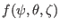
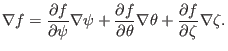
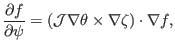
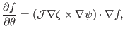
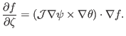

The gradient of a scalar function
 is readily
calculated from the chain rule,

(128)
Note that the gradient of a scalar function is in the covariant
representation. The inverse form of this expression is obtained by dotting the
above equation by the three contravariant basis vectors, respectively,

(129)

(130)

(131)
Using Eq. (128), the directional derivative in the direction of
is written as